Dino's New Zealand Cicada Guide
Te Aratohu a Dino mō ngā Tātarakihi o Aotearoa
Kikihia - Kikihi Cicadas
The Kikihia is the second most common cicada genus to encounter in New Zealand, and
sometimes the hardest to identify. They are generally smaller than Amphipsalta and harder
to hear, their calls sometimes too high pitched to be audible to adults. Kikihia is
believed to be the most diverse genera of cicadas in New Zealand, with an estimated total of
over 28 species, most undescribed.
[1]
There are debates over the described species within Kikihia. Here I will just be
listing the confirmed species, but if you want to see information on the unpublished species,
I am working on a page for them. (currently
not up. check later.)
No proper identification key has been produced for the
Kikihia genus. There is a lack of research done in anatomical differences, with most
research being focused on patterning and acoustics, and most identification guides seem to focus
far too much on male patterns. It's reccomended to use a mixture of appearance descriptions,
location and emergence times for identification.
Closer Look
This genus has no bends in its forewing [2] costa, [3] and their body is usually less than 19mm. The pterostigma [4] is not transparent, and the forewing R crossveins [5] are not coloured. the collar of this genera's pronotum [6] is extended outward laterally. [7]
Specimens
Dorsal specimen photos, taken from the archived [8] cicada page of Landcare Research, and the most recent species checklist catalogue. [13]
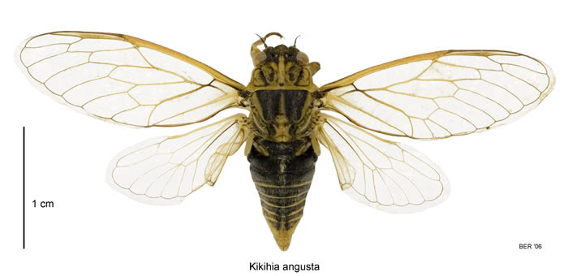
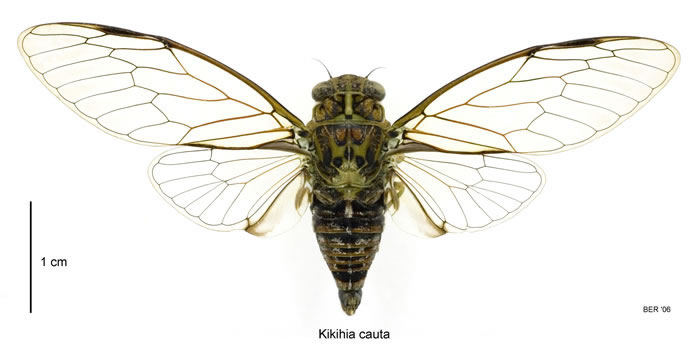
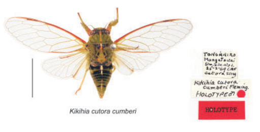
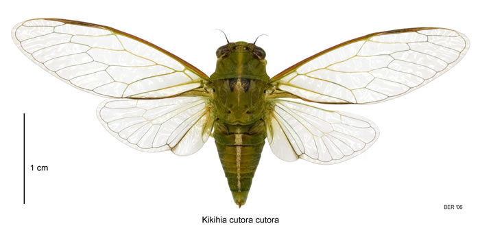
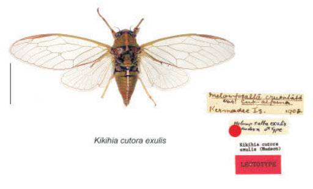
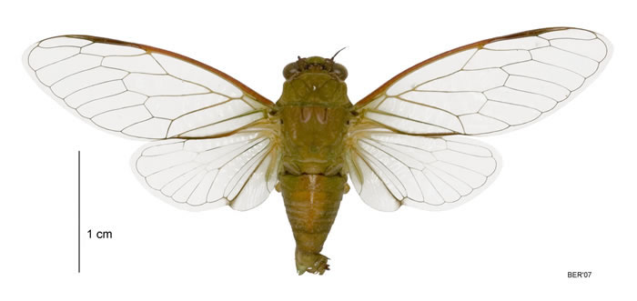
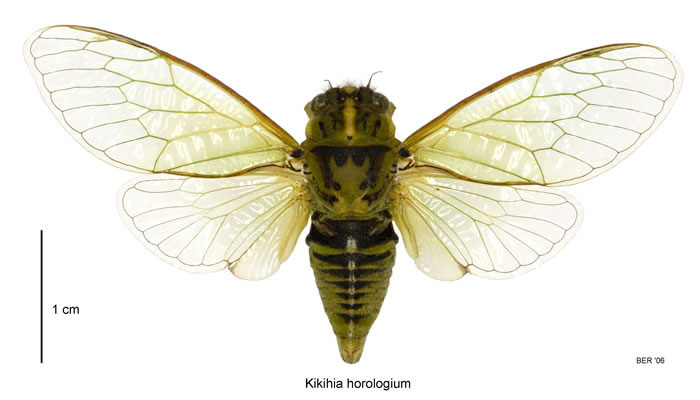
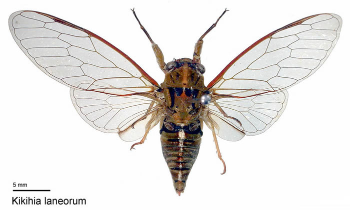
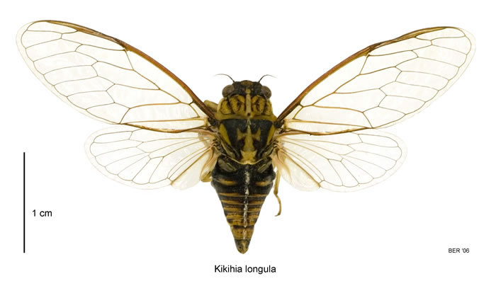
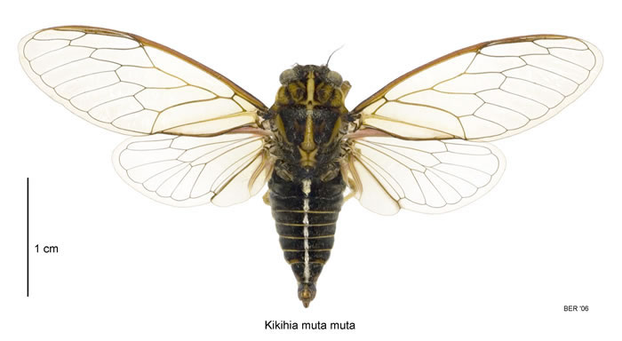
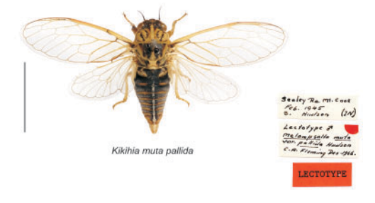
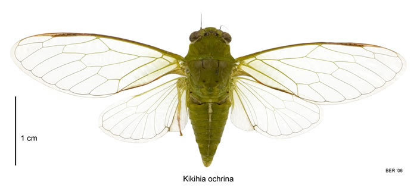
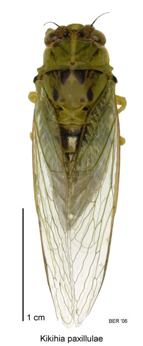
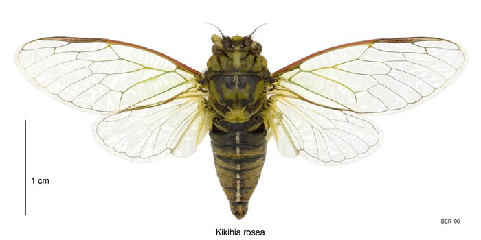
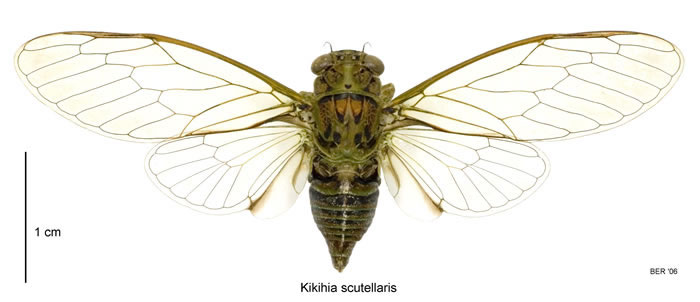
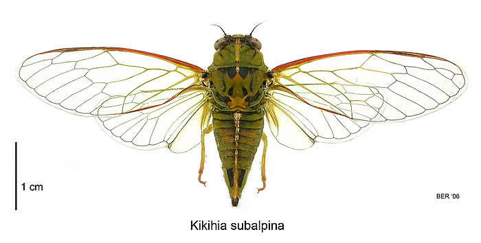
Disclaimer: The below identification details for each species will have come through from various archived and unavaliable sites, alongside my personal observations and knowledge. I have searched around many different sources, and had to jump through many hoops, in order to collect all this information. Ergo, I want to properly credit the source of the information, even if most of it is no longer avaliable to the general public, who has a simple passing interest in these species. My website aims to make this information avaliable to the general public. That's also why I define each scientific term. A huge thank you to those who so happened to save the old cicada websites on Internet Archive, as this wouldn't be possible without them.
Quick Travel
Species Descriptions
Scrub and Grass Cicadas
Kikihia angusta - Tussock Cicada
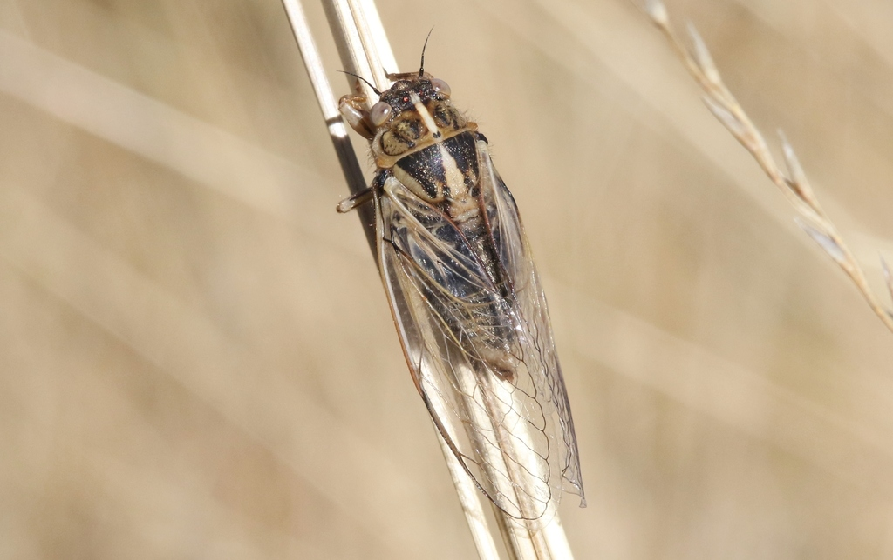
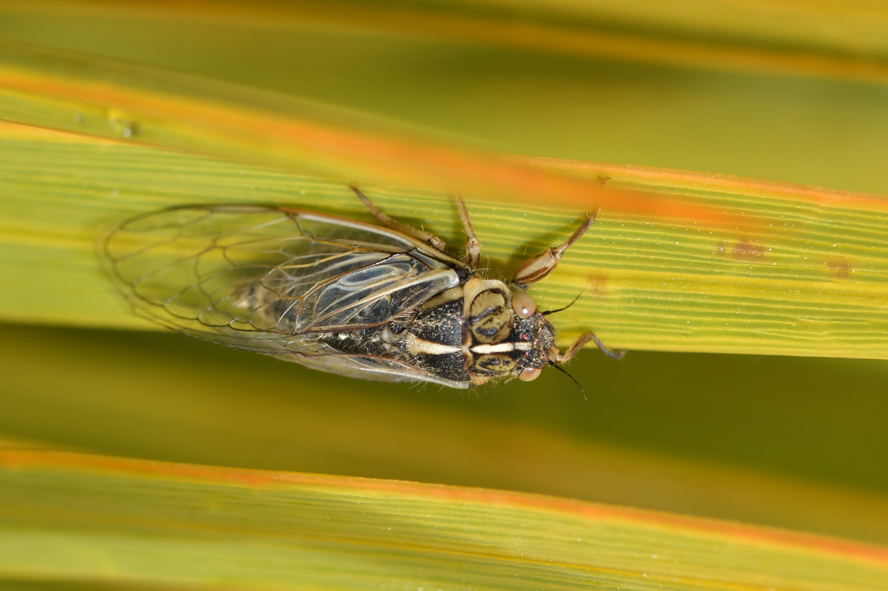
Tussock Cicadas show sexual dimorphism in colouration. The males are a darker brown or
greenish with clearly visible black patterns, and the females are much paler and usually
green or brown with almost absent markings. This kind of dimorphism is also present in
variable cicadas. There is sometimes a vertical, pale or yellow line down their backs.
Tussock Cicadas have more parallel-sided and narrower bodies than other scrub
cicadas, alongside a smaller size compared to all other scrub and grass Kikihia.
They have symmetrical patterns, with vertical, cone-like stripes on their
mesonotum.
[9]
The inner and outer stripes are almost the same length, or often merged together into
one large blotch in males.
[10]
The body length of this species is around 17mm in males, and 18mm in females.
The wingspan is around 39mm in males, and 42mm in females.
[8]
Colour Morphs
Due to the vast amount of variation in this species, more photos have been added than the standard nine maximum I use for other cicada species. This also means I have automatically closed these sections for readability; Click the below button to expand.

Call
Here is the call produced by males of the Kikihia angusta species, and a visualiser of the call with onomatopoeia I use to identify it. The call can be of various speeds.
The source of the above audio clip is from the archived Hydrodictyon NZ Cicada Species page [11] .
silversea_starsong on iNaturalist
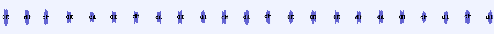
dit - dit - dit - dit - dit - dit - dit - dit - dit - dit - dit - dit - dit - dit - dit - dit - dit - dit - dit - dit - dit - dit - dit
Distribution
These cicadas can be found around the South Island, preferring subalpine environments, lowlands in the lower South Island, and hills in the upper South Island. [12] [13]
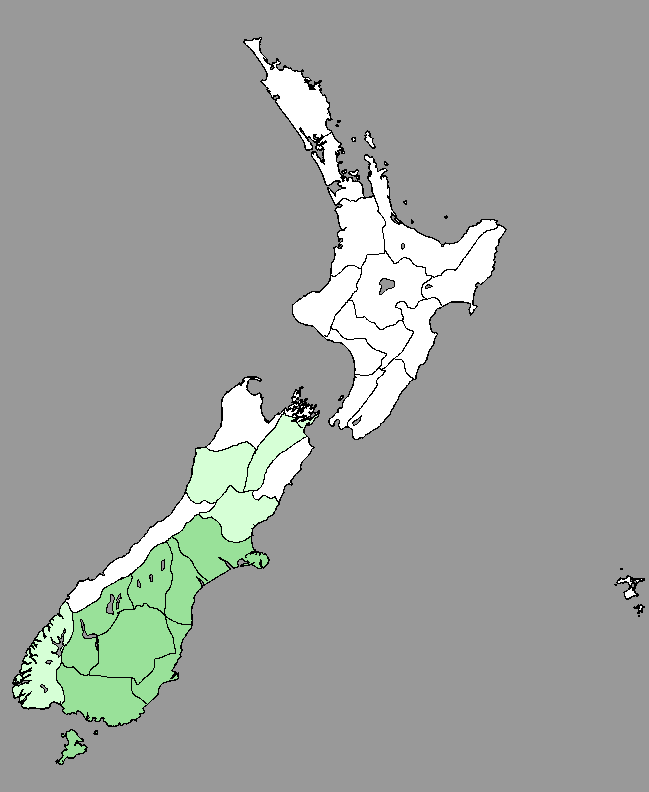
Kikihia longula - Chatham Island Cicada
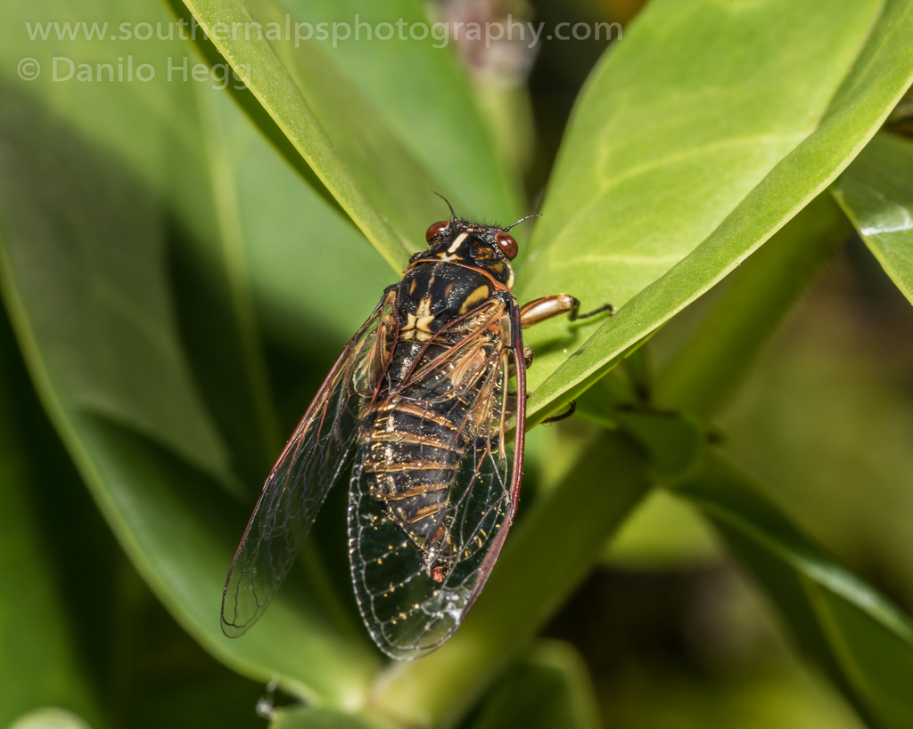
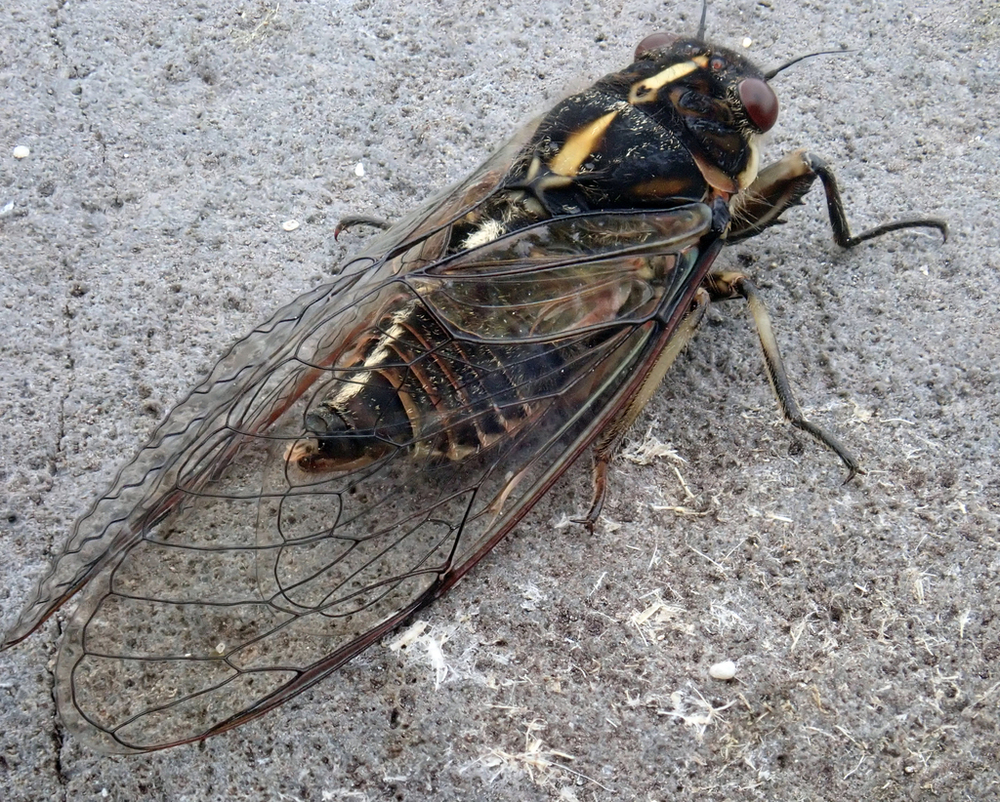
Kikihia longula is the only species of cicada documented on the Chatham
Islands.
[13]
They show the common sexual dimorphism shared by most others in their genus,
females being pale colours and males being primarily black.
The body of this
species is robust and thick compared to Kikihia rosea, and the two species can
look very similar, but Kikihia longula does not have the red-pink hue to it in
the way Kikihia rosea does.
The inner marks on this species' mesonotum are
shorter than the outer marks.
The body length is about 18mm in males, and 20mm in
females.
The wingspan of this species is about 48mm in males, and 52mm in
females.
[8]
Colour Morphs
Due to the vast amount of variation in this species, more photos have been added than
the standard nine maximum I use for other cicada species. This also means I have
automatically closed these sections for readability; Click the below button to expand.
Chathams cicada males are mostly black, their secondary colour can be green,
brown, yellow, or red. Females are usually either mostly green or yellow.
Call
Here is the call produced by males of the Kikihia longula species, and the onomatopoeia I use to identify it.
These little guys sound like they're laughing at you. Their call is similar to Kikihia muta, but also distinctly different.
ziii-zit-zit-zit-zit-zit-zit-zit-zit
Distribution
These cicadas can only be found on the Chatham Islands, and are the only documented cicadas present there. [13]
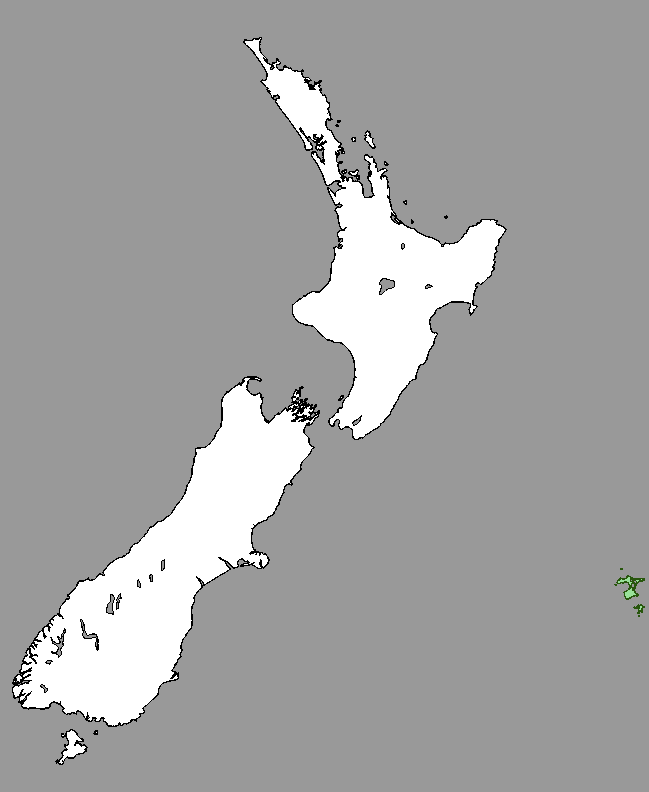
Kikihia muta - Variable Cicada
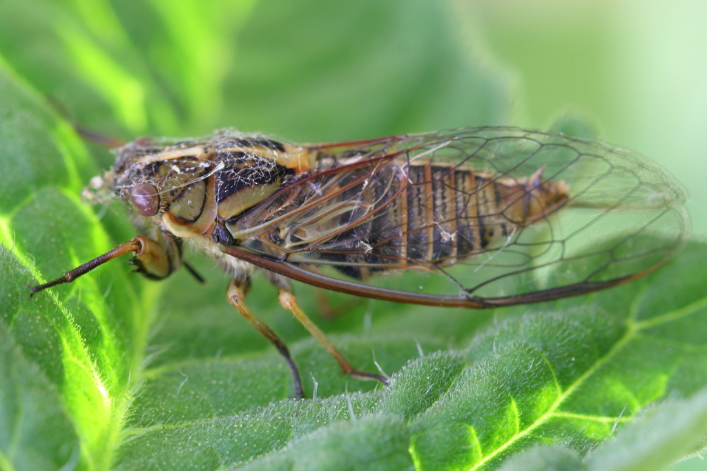
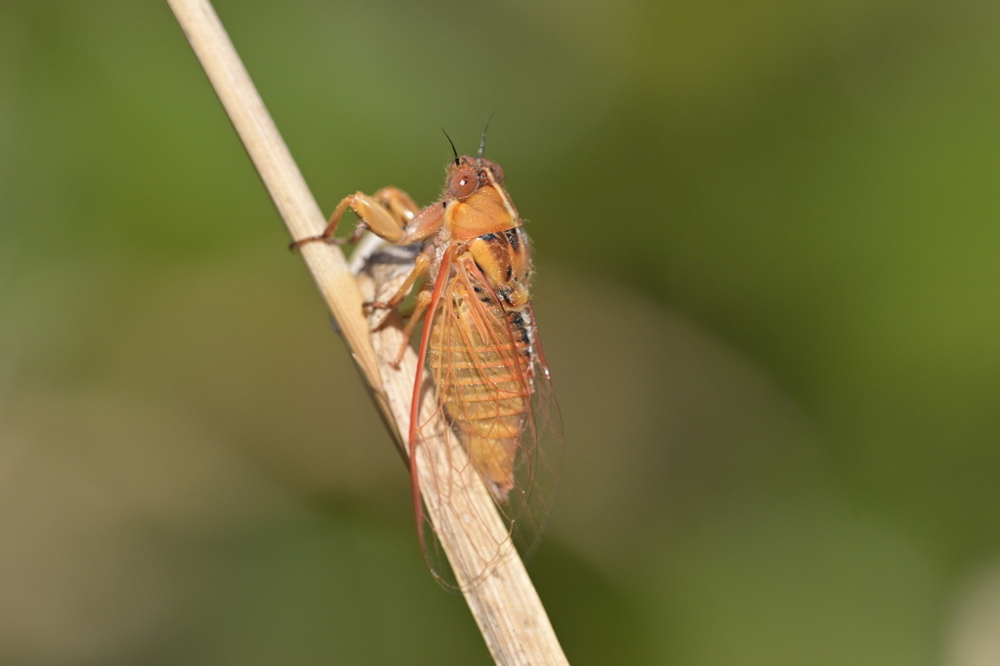
Variable cicadas are the reason why I spent so long procrastinating making the page for
this genus. Alongside the general under-documented nature of this genus,
Kikihia muta particularly has so many morphs and variations that it's almost
impossible to list them all. Most of these images are probably Kikihia muta muta.
To make the matter of their variability worse, females and males show sexual
dimorphism in colouration.
I love cicadas, but I can't help but hold both
admiration and the slightest hint of frustration with this species. I do not hate them,
for they do not know the mental pain they have caused me, but their variability is both
an incredibly interesting trait, and a nightmare when attempting to properly identify a
species of Kikihia.
This species' body length is about 17mm in males, and 19mm in females, making them
smaller than Kikihia longula and Kikihia rosea, but larger than
Kikihia angusta.
[8]
The markings on this species' can be whatever they want it to be. The inner marks
can be shorter or longer than the outer marks.
Subspecies
Despite its high variability (hence the name), Kikihia muta is split into two
subspecies, and one unpublished subspecies. Not enough research has been done on these
cicadas, so they're mostly lumped together.
These two subspecies are
Kikihia muta muta and Kikihia muta pallida.
Colour Morphs
As mentioned before, this species is highly variable and I suggest closing this photo section after you are done looking, due to how large it is.
Call
Here is the call produced by males of the Kikihia muta species, and a visualiser of the call with onomatopoeia I use to identify it. The call can be at various speeds.
The source of the above audio clip is from the archived Hydrodictyon NZ Cicada Species page. [11] This call in particular belongs to Kikihia muta muta.
Ziiiiiit-zitzitzitzitzitzitzit
Or "Heeeere, kittykittykittykitty"
Distribution
Overall Map
These cicadas have generally been reported everywhere in New Zealand, aside from Fiordland and Southland. [12] [13]
Subspecies Maps
Subspecies have been collected and identified in these regions; Red (left) representing Kikihia muta muta and blue (right) representing Kikihia muta pallida. [13]
Kikihia rosea - Pink Cicada - Murihiku Cicada
This species is the largest of the grass and scrub cicadas.
Like all other scrub cicadas, Kikihia rosea shows sexual dimorphism in
colouration, male patterns being more obvious, and female patterns either pale or
indistinct. Some individuals have a pinkish hue to them, giving them the common name of
"Pink Cicadas".
The inner markings of this species are shorter than the outer
marks.
The body length of this species is around 19mm in males, and 22mm in
females.
The wingspan is around 47mm in males, and 57mm in females.
[8]
There is a long, pale line sometimes down the abdomen.
Colour Morphs
These cicadas are usually a pinkish-coloured orange or yellowish, with males appearing mostly black due to their markings. Some individuals are green, with particularly green females looking similar to Kikihia subalpina.
Call
Here is the call produced by males of the Kikihia rosea species, and a visualiser of the call with onomatopoeia I use to identify it. The call can be of various speeds.
The source of the above audio clip is from the Te Papa Museum page. [12]
dit dit dit dit dit dit dit dit dit dit dit dit dit dit dit dizzzizziziiziidiizzziizziizi dit dit dit dit dit dit dit dit dit dizzzizziziiziidiizzziizziizi dit dit dit dit dit
Distribution
These cicadas can be found around the South Island, preferring the lower and middle south, avoiding the northern south areas. [12] [13]
Shade Singers
Kikihia cauta - Greater Bronze Cicada
The Greater Bronze Cicada is the height-loving member of the shade singers. They prefer
to be high up in the canopy on trees, which is why there isn't many pictures of them.
Unlike Kikihia scutellaris, this species does not like to sit on māhoe plants.
The body in this species is more egg-shaped, and less parallel, as seen best "tip
of head to 2nd segment of abdomen" from the dorsal image provided below. The collar of
this species appears as wide as the end of the pronotum.
In colouration, the
greater bronze cicada is normally primarily green or yellow-green, secondary colours
(markings) being brownish and black. The pronotum has a deeper depression and decorated
with darker and much more defined markings than Kikihia scutellaris, extreme
extents in males, but present in females also.
In males, the abdominal segments
(upper, tergites) are coloured with black and then red-brown margins.
It is larger
than Kikihia scutellaris, the body length is about 20mm in males and 23mm in
females.
The wingspan is about 56mm in males and 61mm in females.
[8]
This species has a brown underside.
[12]
Colour Morphs
Unfortunately, these guys like to stay high up in trees, usually near the canopy. Not many photos of them are avaliable.
Call
Here is the call produced by males of the Kikihia cauta species, and a visualiser of the call with onomatopoeia I use to identify it. The call can be of various speeds.
The source of the above audio clip is from the archived Hydrodictyon NZ Cicada Species page. [11]
zzur-zit zzur-zit zzur-zit zzur-zit zzur-zit zzur-zit zzur-zit zzur-zit zzur-zit
Note: These cicadas sound similar to Amphipsalta zelandica. A good way to differentiate is that Amphipsalta zelandica is louder, more common, and has audible wing clicks on each new section.
Kikihia scutellaris - Lesser Bronze Cicada
Lesser Bronze Cicadas are the more commonly seen member of the shade singers. They seem
to especially enjoy māhoe plants.
In the dorsal view provided below, it is easier
to see their more parallel nature than Kikihia cauta, which is best viewed from
"tip of head to 2nd segment of abdomen". The collar of this species appears slightly
wider than the end of the pronotum.
This species' primary colour is usually a olive
or yellow-olive, and their patterns are black and brown-copperish.
This species
has a less steep depression in the pronotum. Compared to Kikihia cauta, the
markings of the Lesser Bronze cicada are paler and less defined, extreme in males, but
still present in females.
In males, the abdominal segments (upper, tergites) are
coloured with brown-black and then green-blue margins.
It is smaller than
Kikihia cauta, male body length about 16mm and female body length about 19mm.
The wingspan is about 48mm in males, and 56mm in females.
[8]
This species has a green underside.
[12]
Colour Morphs

Call
Here is the call produced by males of the Kikihia scutellaris species, and a visualiser of the call with onomatopoeia I use to identify it. The call can be of various speeds.
The source of the above audio clip is from the archived Hydrodictyon NZ Cicada Species page. [11]
zzzurrrr zi-t-zzuuuurrrrr dit dzeeew dzeeew zzzuuurrrr zi-t-zzuuuurrrrrrrr dit zi-t-zzuuuurrrrrrrr dit
Green Foliage Cicadas
The Green Foliage Cicadas can be split into three subgroups.
Group 1 contains K. dugdalei and K. ochrina.
Group 2 contains K. horologium,
K. subalpina and K. laneorum.
Group 3
contains K. cutora and K. paxillulae. (and
additionally, K. convicta)
Kikihia dugdalei - Dugdale's Cicada
Dugdale's Cicada is difficult to differentiate from K. ochrina. Many identification methods require a close look at the individual, which is why I'll do my best to be detailed. The body length of males is 15-18mm, and 17-20mm in females, with a 42-49mm wing length in males and 48-55mm in females. [8]
Similarities
Both species are primarily a solid colour, usually green, and lack a centred yellow vertical line along the pronotum. Both have short, "sickle-like" lines on their mesonotum in the place of the inner markings, and two small black posterior spots. They share a silvery, sometimes faint, stripe down the abdomen. [8]
Differences
The coxae
[15]
of this species' forelegs have pinkish-red patches. Males usually have two small
black spots on the second lower abdominal segment (sternite). Pro- and mesonotum
display more obvious markings than K. ochrina, especially in males.
K. dugdalei
has reddish/brown/orange colouration at the base of the wings. This species' head is
also flatter, eyes less curved downward along the clypeus (nose). Seemingly thicker
body overall, abdomen more wide and sharply triangular.
Call
The source of the above audio clip is from the archived Hydrodictyon NZ Cicada Species page. [11]
dididididididididididididideedidididididididdeee
Note that this is far too fast for me to properly label. K. dugdalei can sound very similar to K. ochrina, but distinctive differences are the slight hiccup in the call and speed.
Kikihia ochrina - April Green Cicada
The April Green Cicada is difficult to differentiate from K. dugdalei. Many identification methods require a close look at the individual, which is why I'll do my best to be detailed. The body length of males is 15-20mm, and 17-23mm in females, with a 42-54mm wing length in males and 49-59mm in females. [8]
Similarities
Both species are primarily a solid colour, usually green, and lack a centred yellow vertical line along the pronotum. Both have short, "sickle-like" lines on their mesonotum in the place of the inner markings, and two small black posterior spots. They share a silvery, sometimes faint, stripe down the abdomen. [8]
Differences
The colouration is uniform with the exception of the black markings around the ocelli, and aforementioned mesonotum colouration. no pinkish spots at the foreleg coxae, and always lacking the black spots on the second lower abdominal segment (sternite). Base of the wings appears green. This species' head is also more curved downward than K. dugdalei, eyes curved downward along the clypeus (nose).

Call
The source of the above audio clip is from the archived Hydrodictyon NZ Cicada Species page. [11]
di di di di di di di di di di di di di di di di di di di di di di di di di di di di di di di di di di di di di di di di di
Notice the pace of this call. this recording is about 11 dits per second.
Kikihia horologium - Clock Cicada
Clock cicadas are normally bright green, with bold dark markings that emphasise the
grooves of the pronotum and mesonotum. The patterning is black, with outer markings
usually taking on more of a brownish colour, and longer than the inner markings. the
two spots near the mesonotum are thick and well defined. There is a lighter, yellow
patch near the end of the mesonotum. the pronotum has a bright yellow line along the
centre.
Between the eyes is a dark, brownish patch, seperated by the
aforementioned yellow line. The underside of the head has solid green 'cheeks'
beside the clypeus (nose). The clypeus itself is commonly a lighter colour than the
rest of the body.
The pro- and mesosternum have rectangular black patches. The
abdomen usually has a visible, centred silvery stripe.
The female pygophore
(genital capsule) either has very thin dark lines symmetrically along the middle, or
lacks them entirely.
The body has dense, dark and long hairs. The body length
is 17-21mm in males, and 19-23mm in females. The wing length is 42-49mm in males,
and 46-53mm in females.
[8]
Colour Morphs
Clock cicadas are usually a bright green, but rarely orange.
Call
The source of the above audio clip is from the archived Hydrodictyon NZ Cicada Species page. [11]
ti ti ti ti ti ti ti ti ti ti ti ti ti ti ti ti ti ti ti ti ti ti ti ti ti ti ti ti ti ti ti ti ti ti tik tik
Note that this cicada may sound similar to a sprinkler.
Distribution
These cicadas can be found in the upper South Island, along the Southern Alps, in subalpine shrubs. [12] [13]
Kikihia subalpina - Subalpine Green Cicada
Subalpine Green Cicadas are, as the name suggests, usually bright green. The grooves
of the pronotum are emphasised with lighter markings, and there is a long, vertical,
yellow line along it.
The mesonotum has dark black patterns, usually lighter
than in the Clock Cicada. Outer markings longer than the inner markings. Inner
markings close together, also have a thin orange-yellow border between.
Body
length longer than in clock cicadas, 18-22mm in males and 20-24mm in females, with
short, light hairs across.
'cheeks' between frons are purple-pink, and
triangular patches on the pro- and mesosternum.
The coxae of the forelegs have
pink-red patches. There's a silvery stripe, vertically along the abdomen, as in
K. horologium.
The female pygophore (gential capsule) has thick,
symmetrical black stripes along both sides.
The wing length is 46-57mm in
males, and 50-62 in females.
This species is notoriously difficult to
differentiate from Lane's Cicada.
[8]
Colour Morphs
Usually green, but also red, brown, orange, and yellow.
Nymphs and Teneral


Call
Var 1 - The source of the above audio clip is from the archived Hydrodictyon NZ Cicada Species page. [11]
Var 2 (possibly warmer temp?) - The source of the above audio clip is from the Te Papa Museum cicada page. [12]
di-i-i-i-i-i-i-i-i-i-i-i-i-i-i-i-i-i-i-i-i-it dew dew te-to te-to te-toh di-i-i-i-i-i-i-i-i-i-i-i-i-i-i-i-i-i-i-it dew te-to te-to te-to te-toh di-i-i-i-i-i-i-i-i-i-i-i-i-i-i-i-i-i-i-it dew te-to te-to te-to te
Distribution
This species is found throughout the South Island and the lower North Island, alongside Stewart Island. [12] [13]
Kikihia laneorum - Lane's Cicada
Lane's Cicada is rare and difficult to differentiate from K. subalpina, dead
individuals impossible to discern. The only reliable way is through their call and
location.
Though, some male individuals posses a black groove on the '2nd
sternite' of the abdomen, which may be a diagnostic feature. Silvery stripe
vertically along abdomen.
Yellow vertical line along centre of pronotum.
Inner markings shorter than outer markings.
Reddish patches on leg
coxae.
[8]
Colour Morphs
Usually green, sometimes yellow. potentially orange and/or brown? Not many photos exist.
Call
The source of the above audio clip is from the archived Hydrodictyon NZ Cicada Species page. [11]
te-oh te-oh te-oh te-oh te-oh teeeh - te-oh teeeh - te-oh te-oh te-oh te-oh te-oh teeeh - te-oh teeeh - te-oh te-oh te-oh te-oh te-oh te-oh te-oh te-oh te-oh te-oh te-oh te-oh te-oh teeeh - te-oh teeeh
Distribution
These cicadas can be found through the whole North Island, but prefer coastal and lowland regions. [12] [13]
Kikihia cutora - Snoring Cicada - Cutora the Snorer
Kikihia cutora appears similar to K. paxillulae in
appearance, though larger in size (17-21mm males, 20-23mm females). The head of this
species is shorter than K. paxillulae, with a less rounded
and flatter 'nose'. There is a yellow line along the pronotum.
The mesonotum
has obvious inner markings, and living individuals have a orange-yellow or
orange-red spot in between them. The outer markings are more faded or entirely
absent. The two spots at the end of the mesonotum are clearly visible.
The
snoring cicada has a pinkish spot at the coxae
[15]
of its forelegs.
 - dwilson on iNaturalist - Click for source observation")
 - janet-nz on iNaturalist - Click for source observation")
Call
The source of the above audio clip is from the archived Hydrodictyon NZ Cicada Species page. [11] This call is specifically that of the Kikihia cutora cutora subspecies.
The source of the above audio clip is recorded by yours truly. [14]
ddurrrrrrrrreeeeeeeeeeeeeeeeeeeeeeeeeeeeeeee dur-dur-dur-di
Distribution
Red (left) representing Kikihia cutora cumberi, which is found generally all around the North Island aside from a few areas, green (middle) representing Kikihia cutora cutora, which prefers the upper north areas of the North Island, and blue (right) representing Kikihia cutora exulis, only found on Raoul Island in the Kermadec region. [12] [13]
Kikihia paxillulae - Peg's Cicada
Peg's cicada looks similar to the snoring cicada, though smaller. Despite this
smaller size, Peg's cicada has a 'longer' head than K. cutora, with a much
more laterally compressed, rounded 'nose'.
They are usually green with darker
markings. Outer marking appear browner or at a lower opacity, though still visible,
usually returning to full opacity at the tips. Inner markings are obvious and
darkened. Similar to K. cutora, this species has a centred yellow-ish line
along its body. However, it lacks the patch of orange-yellow between its inner
mesonotum markings.
There is also a silvery line along the abdomen.
The
foreleg coxae have pinkish patches.
The body length in males is 15-17mm, and
in females 19-21mm.
The wing length is 37-43mm in males and 44-52mm in
females.
[8]
Colour Morphs
Usually green, but brown-orange has been found.
Call
The source of the above audio clip is from the archived Hydrodictyon NZ Cicada Species page. [11]
duuuurrreee tik-o tik-o tik ... duuuurrreee tik-o tik-o tik ... duuuurrreee tik-o tik-o tik ... duuuurrreee tik-o tik-o tik ...
Distribution
These cicadas can be found around long grass and shrubs in North Canterbury, and most commonly, Kaikoura. [12] [13]
Kikihia convicta - Norfolk Island Cicada
Norfolk Island is not a territory in New Zealand, however I feel obligated to include this species as it is a close relative of Kikihia cutora, [1] and part of the Kikihia genus.
Colour Morphs
Green to yellow after death.
Nymphs and Teneral
Call
The source of the above audio clip is from the archived Hydrodictyon NZ Cicada Species page. [11]
d-d-d-d-dit dit dit dit dit dit dit dit ... ... ... d-d-d-d-dit dit dit dit dit dit dit dit ... ... ... dit-dur-dit dit dit dit dit dit
Distribution
These cicadas can be found only on Norfolk Island, near Australia. [13]
-
Arensburger, P., Simon, C., & Holsinger, K. (2004). Evolution and phylogeny of the New Zealand cicada genus Kikihia Dugdale (Homoptera : Auchenorrhyncha : Cicadidae) with special reference to the origin of the Kermadec and Norfolk Islands' species. BLACKWELL PUBLISHING LTD. Journal of Biogeography, 31(11), 1769-1783. Retrieved from https://escholarship.org/uc/item/6ph1m2xx
back
-
The first wing, also referred to as the anterior wing.
back
-
The costa is the thick leading edge of an insect's wings.
back
-
The pterostigma is a specialised area in some insect species, including cicadas. It is attached to the costa near the tip of the wing. It helps in gliding, being heavier than the rest of the wing.
back
-
Using the Comstock-Needham system used for naming insect wing veins, R represents "Radius", and in cicadas, represents the crossveins (circled in red) for the sections labelled R4 and R23 here:
back
-
The pronotum is the first segment of an insect's body after the head.
back
-
Images taken from the Lucidcentral NZ cicadas page - example of the collar's lack of extension in the Rhodopsalta genus (first image) and lateral extension in the Kikihia genus (second image).
back
-
Larivière, M.-C.; Rhode, B.E.; Larochelle, A. 2006 (and updates): New Zealand Cicadas (Hemiptera: Cicadidae): A virtual identification guide. The New Zealand Hemiptera Website, NZHW 05. Archived.
back
-
The mesonotum is the next major body segment after the pronotum, just after the pronotum collar.
back
-
Digital recreation of a generic cicada mesonotum pattern, with labelling.
back
-
Archived Hydrodictyon NZ Cicada Species Page
back
-
Te Papa Museum - Kihikihi Cicadas and Their Sounds - Kikihia
back
-
Auchenorrhyncha (Insecta: Hemiptera): catalogue. Fauna of New Zealand 63, Lariviere, M.-C.; Fletcher, M.J.; Larochelle, A. 2010.
back
-
thats me
back
-
The coxae is functionally the first segment of an insect's leg.
back